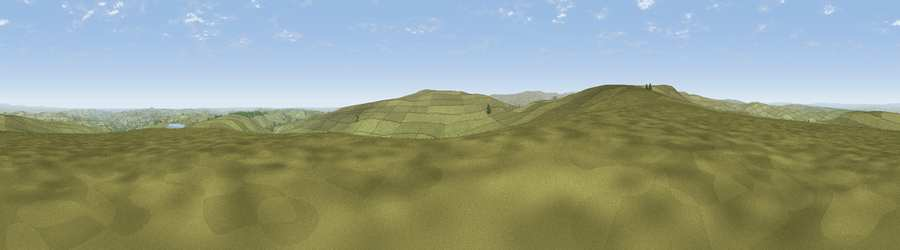

Viewpoint near Edmundbyers
#11313 in England · top 22% of its area beats it · near EdmundbyersWhere it is
The exact computed spot (NZ 01125 45025). Click the marker for map links.
The view, rendered

A 360° render of this exact spot computed from the terrain model, tree cover and land cover — summer colours, afternoon light, calibrated against photographs of famous viewpoints. Real trees, hedges and buildings will differ in detail.
The panorama
Grey silhouette: terrain skyline in each direction (720 bearings, Earth curvature and refraction included). Dashed green: skyline with trees (+15 m) and buildings (+8 m) as obstacles. Blue strip: how far the ground is visible on each bearing.
Where the view opens
Wedge length = distance to the farthest visible ground on that bearing (vegetation-aware). Rings at 10, 25 and 50 km.
What fills the view
91% grassland · 4% woodland · 3% cropland · 1% built-up
Angular shares of the visible panorama (visual magnitude), not map area. Landscape diversity 0.17 (0–1 Shannon).
Key numbers
More beautiful places nearby
The staircase of upgrades: each row has a higher view potential than everything closer. Driving times are estimates from straight-line distance, calibrated against real road routing — check an actual route before setting out.
| Place | Direction | Drive | Score |
|---|---|---|---|
| Harehope Hill | N · 2 km | ~5 min | 62.0 |
| Viewpoint near Edmundbyers | N · 2 km | ~6 min | 65.0 |
| Viewpoint near Rookhope | W · 3 km | ~7 min | 70.0 |
| Collier Law | S · 3 km | ~8 min | 71.7 |
| Pontop Pike | ENE · 16 km | ~28 min | 77.8 |
| Little Dun Fell | WSW · 33 km | ~51 min | 78.4 |
| Cross Fell | WSW · 34 km | ~52 min | 78.7 |
| Viewpoint near Cumrew | W · 46 km | ~66 min | 78.8 |
54.80010, -1.98402 · source: screening · position refined by local search. Computed location — check access rights before visiting.